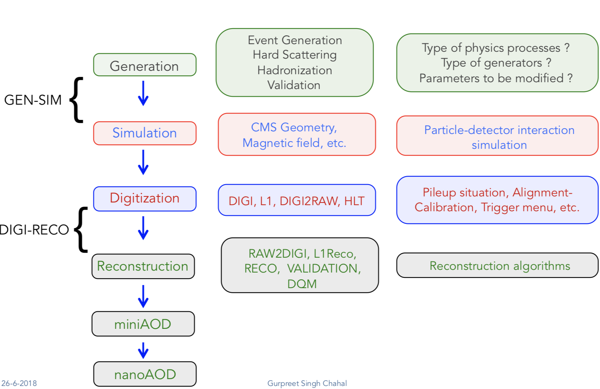

Private MC generation¶
This guide describes private MC production. Comprehensive documentation about central MC production in CMS can be found here: https://cms-pdmv.gitbook.io.
The MC generation pipeline contains multiple steps (see figure below), which include simulation of physics processes, interactions of particles with detector material, reconstruction and triggering algorithms, etc.

Reference: https://cms-pdmv.gitbook.io/project/monte-carlo-management-mcm-introduction
In this tutorial, we provide examples for generation of:
- Run 2 Ultra Legacy (UL) datasets
- Run 3 datasets
The generator used in these examples is MadGraph. A short MadGraph tutorial can
be found here.
Typically, the conditions that should be decided before beginning the production are the following:
- GlobalTag
- Detector alignment (CMSSW release)
- HLT menus
- NanoAOD versions
In this example we are going to produce \(DY(pp\rightarrow ll)\) samples for the Run 2 Ultra Legacy (UL) campaign.
The first step of production is generation of LHE files (python files with settings)
via Madgraph. In this example we are going to use the UL18 Drell-Yan LHE file
already produced by the CMS PPD.
Test dataset: DYJetsToLL_M-50_TuneCP5_13TeV-madgraphMLM-pythia8
In this example, we will produce a Drell-Yan dataset using the same conditions
as in the official Run 3 samples (Run3Summer22 campaigns).
Test dataset: DYJetsToLL_M-50_TuneCP5_13p6TeV-madgraphMLM-pythia8
Caution
Will work only with slc8 architectures.
Step 0: Create your gridpack¶
Step 1 : LHE → GEN-SIM¶
In this step, we will generate a dataset in GEN-SIM format.
We will start by producing events at the generator level (the four-vectors of particles),
and simulate the energy footprint left by the particles interacting with detector material.
Some of the important parameters to keep in mind for such campaigns:
- Beamspot
- Generator fragment (specifies the process which needs to be generated)
- Detector geometry
We start with downloading the LHE fragment (process definition, pythia settings, path to MadGraph gridpack) from McM (Monte Carlo Production Management):
mkdir run2ul_mcgen
cd run2ul_mcgen
curl -s -k https://cms-pdmv-prod.web.cern.ch/mcm/public/restapi/requests/get_fragment/TAU-RunIISummer20UL18wmLHEGEN-00001 \
--retry 3 \
--create-dirs \
-o Configuration/GenProduction/python/TAU-RunIISummer20UL18wmLHEGEN-00001-fragment.py
[ -s Configuration/GenProduction/python/TAU-RunIISummer20UL18wmLHEGEN-00001-fragment.py ] || exit $?;
mkdir run3_mcgen
cd run3_mcgen
curl -s -k https://cms-pdmv-prod.web.cern.ch/mcm/public/restapi/requests/get_fragment/PPD-Run3Summer22wmLHEGS-00014 \
--retry 3 \
--create-dirs \
-o Configuration/GenProduction/python/PPD-Run3Summer22wmLHEGS-00014-fragment.py
[ -s Configuration/GenProduction/python/PPD-Run3Summer22wmLHEGS-00014-fragment.py ] || exit $?;
Then, install the CMSSW release:
For Run 2 production, we will use the CMSSW_10_6_17_patch1 release.
source /cvmfs/cms.cern.ch/cmsset_default.sh
source /cvmfs/cms.cern.ch/crab3/crab.sh
cmssw-el7 --bind /depot:/depot
cd /path/to/run2ul_mcgen/
export SCRAM_ARCH=slc7_amd64_gcc700
source /cvmfs/cms.cern.ch/cmsset_default.sh
voms-proxy-init -voms cms
cmsrel CMSSW_10_6_17_patch1
cd CMSSW_10_6_17_patch1/src
cmsenv
mv ../../Configuration .
scram b -j8
cd ../..
Finally, run the cmsDriver.py script and cmsRun to generate the events. In this example, we generate only
10 events locally. For full production, please submit this via CRAB jobs.
cmsDriver.py Configuration/GenProduction/python/TAU-RunIISummer20UL18wmLHEGEN-00001-fragment.py \
--python_filename TAU-RunIISummer20UL18wmLHEGEN-00001_1_cfg.py \
--eventcontent RAWSIM \
--customise Configuration/DataProcessing/Utils.addMonitoring \
--datatier GEN-SIM \
--fileout file:TAU-RunIISummer20UL18GS.root \
--conditions 106X_upgrade2018_realistic_v4 \
--beamspot Realistic25ns13TeVEarly2018Collision \
--step LHE,GEN,SIM \
--geometry DB:Extended \
--era Run2_2018 \
--no_exec \
--mc \
-n 10
cmsRun TAU-RunIISummer20UL18wmLHEGEN-00001_1_cfg.py
Output : TAU-RunIISummer20UL18wmLHEGEN-00001.root
cmsDriver.py Configuration/GenProduction/python/PPD-Run3Summer22wmLHEGS-00014-fragment.py \
--python_filename PPD-Run3Summer22wmLHEGS-00014_1_cfg.py \
--eventcontent RAWSIM,LHE \
--customise Configuration/DataProcessing/Utils.addMonitoring \
--datatier GEN-SIM,LHE \
--fileout file:PPD-Run3Summer22wmLHEGS-00014.root \
--conditions 124X_mcRun3_2022_realistic_v12 \
--beamspot Realistic25ns13p6TeVEarly2022Collision \
--customise_commands process.RandomNumberGeneratorService.externalLHEProducer.initialSeed="int(123456)"\\nprocess.source.numberEventsInLuminosityBlock="cms.untracked.uint32(250)" \
--step LHE,GEN,SIM \
--geometry DB:Extended \
--era Run3 \
--no_exec \
--mc \
-n 10
cmsRun PPD-Run3Summer22wmLHEGS-00014_1_cfg.py
Output : PPD-Run3Summer22wmLHEGS-00014.root
Step 1 will produce a GEN-SIM output file.
Step 2 DIGI → L1 → DIGI2RAW → HLT¶
With pile-up: Neutrino Gun
source /cvmfs/cms.cern.ch/cmsset_default.sh
source /cvmfs/cms.cern.ch/crab3/crab.sh
cmssw-el7 --bind /depot:/depot
cd /path/to/run2ul_mcgen/
mkdir DIGI_step
cd DIGI_step
export SCRAM_ARCH=slc7_amd64_gcc700
voms-proxy-init -voms cms
cmsrel CMSSW_10_6_17_patch1
cd CMSSW_10_6_17_patch1/src
cmsenv
scram b
cd ../../
cmsDriver.py \
--python_filename TAU-RunIISummer20UL18DIGI-00007_1_cfg.py \
--eventcontent PREMIXRAW \
--pileup 2018_25ns_UltraLegacy_PoissonOOTPU \
--customise Configuration/DataProcessing/Utils.addMonitoring \
--datatier GEN-SIM-DIGI \
--fileout file:TAU-RunIISummer20UL18DIGI-00007.root \
--pileup_input dbs:/Neutrino_E-10_gun/RunIISummer20ULPrePremix-UL18_106X_upgrade2018_realistic_v11_L1v1-v2/PREMIX \
--conditions 106X_upgrade2018_realistic_v11_L1v1 \
--step DIGI,DATAMIX,L1,DIGI2RAW \
--procModifiers premix_stage2 \
--geometry DB:Extended \
--filein file:TAU-RunIISummer20UL18GS.root \
--datamix PreMix \
--era Run2_2018 \
--runUnscheduled \
--no_exec \
--mc \
-n 10
cmsRun TAU-RunIISummer20UL18DIGI-00007_1_cfg.py
Without pile-up
cmsDriver.py \
--python_filename TAU-RunIISummer20UL18DIGI-00007_1_cfg.py \
--eventcontent RAWSIM \
--customise Configuration/DataProcessing/Utils.addMonitoring \
--datatier GEN-SIM-DIGI \
--fileout file:TAU-RunIISummer20UL18DIGI-00007.root \
--conditions 106X_upgrade2018_realistic_v11_L1v1 \
--step DIGI,L1,DIGI2RAW \
--geometry DB:Extended \
--filein file:TAU-RunIISummer20UL18GS.root \
--era Run2_2018 \
--runUnscheduled \
--no_exec \
--mc \
-n 10
cmsRun TAU-RunIISummer20UL18DIGI-00007_1_cfg.py
Output : TAU-RunIISummer20UL18DIGI-00007.root
Adding the HLT objects /information.
For these samples: HLTv32 is added, which is present in
CMSSW_10_2_16_UL release - note that it is different
from the originally used CMSSW release!.
Create a new directory and set up CMSSW_10_2_16_UL release:
source /cvmfs/cms.cern.ch/cmsset_default.sh
source /cvmfs/cms.cern.ch/crab3/crab.sh
cmssw-el7 --bind /depot:/depot
cd /path/to/run2ul_mcgen/
mkdir HLT_step
cd HLT_step/
export SCRAM_ARCH=slc7_amd64_gcc700
source /cvmfs/cms.cern.ch/cmsset_default.sh
voms-proxy-init -voms cms
cmsrel CMSSW_10_2_16_UL
cd CMSSW_10_2_16_UL/src/
cmsenv
scram b
cd ../..
cmsDriver.py \
--python_filename TAU-RunIISummer20UL18HLT-00011_1_cfg.py \
--eventcontent RAWSIM \
--customise Configuration/DataProcessing/Utils.addMonitoring \
--datatier GEN-SIM-RAW \
--fileout file:TAU-RunIISummer20UL18HLT-00011.root \
--conditions 102X_upgrade2018_realistic_v15 \
--customise_commands process.source.bypassVersionCheck = cms.untracked.bool(True) \
--step HLT:2018v32 \
--geometry DB:Extended \
--filein file:TAU-RunIISummer20UL18DIGI-00007.root \
--era Run2_2018 \
--no_exec \
--mc \
-n 10
cmsRun TAU-RunIISummer20UL18HLT-00011_1_cfg.py
Output: TAU-RunIISummer20UL18HLT-00011.root
With pile-up:
Neutrino_E-10_gun/Run3Summer21PrePremix-Summer22_124X_mcRun3_2022_realistic_v11-v2/PREMIX
cmsDriver.py \
--python_filename PPD-Run3Summer22DRPremix-00019_1_cfg.py \
--eventcontent PREMIXRAW \
--customise Configuration/DataProcessing/Utils.addMonitoring \
--datatier GEN-SIM-RAW \
--fileout file:PPD-Run3Summer22DRPremix-00019_0.root \
--pileup_input "dbs:/Neutrino_E-10_gun/Run3Summer21PrePremix-Summer22_124X_mcRun3_2022_realistic_v11-v2/PREMIX" \
--conditions 124X_mcRun3_2022_realistic_v12 \
--step DIGI,DATAMIX,L1,DIGI2RAW,HLT:2022v12 \
--procModifiers premix_stage2,siPixelQualityRawToDigi \
--geometry DB:Extended \
--filein file:PPD-Run3Summer22wmLHEGS-00014.root \
--datamix PreMix \
--era Run3 \
--no_exec \
--mc \
-n 10
cmsRun PPD-Run3Summer22DRPremix-00019_1_cfg.py
Output : PPD-Run3Summer22DRPremix-00019_0.root
Step3: AOD¶
This step is performed with CMSSW_10_6_17_patch1, which we already
used in previous steps.
We will switch to CMSSW_10_6_17_patch1 and scram again to load
CMSSW-related libraries.
source /cvmfs/cms.cern.ch/cmsset_default.sh
source /cvmfs/cms.cern.ch/crab3/crab.sh
cmssw-el7 --bind /depot:/depot
cd /path/to/run2ul_mcgen/
mkdir RECO_step
cd RECO_step
export SCRAM_ARCH=slc7_amd64_gcc700
voms-proxy-init -voms cms
cmsrel CMSSW_10_6_17_patch1
cd CMSSW_10_6_17_patch1/src
cmsenv
scram b
cd ../../
cmsDriver.py \
--python_filename TAU-RunIISummer20UL18RECO-00011_1_cfg.py \
--eventcontent AODSIM \
--customise Configuration/DataProcessing/Utils.addMonitoring \
--datatier AODSIM \
--fileout file:TAU-RunIISummer20UL18RECO-00011.root \
--conditions 106X_upgrade2018_realistic_v11_L1v1 \
--step RAW2DIGI,L1Reco,RECO,RECOSIM,EI \
--geometry DB:Extended \
--filein file:TAU-RunIISummer20UL18HLT-00011.root \
--era Run2_2018 \
--runUnscheduled \
--no_exec \
--mc \
-n 10
cmsRun TAU-RunIISummer20UL18RECO-00011_1_cfg.py
Output : TAU-RunIISummer20UL18RECO-00011.root
cmsDriver.py \
--python_filename PPD-Run3Summer22DRPremix-00019_2_cfg.py \
--eventcontent AODSIM \
--customise Configuration/DataProcessing/Utils.addMonitoring \
--datatier AODSIM \
--fileout file:PPD-Run3Summer22DRPremix-00019.root \
--conditions 124X_mcRun3_2022_realistic_v12 \
--step RAW2DIGI,L1Reco,RECO,RECOSIM \
--procModifiers siPixelQualityRawToDigi \
--geometry DB:Extended \
--filein file:PPD-Run3Summer22DRPremix-00019_0.root \
--era Run3 \
--no_exec \
--mc \
-n 10
cmsRun PPD-Run3Summer22DRPremix-00019_2_cfg.py
Output : PPD-Run3Summer22DRPremix-00019.root
Step 4: MiniAOD¶
MiniAODv2
This is supported in CMSSW versions starting from CMSSW_10_6_27.
source /cvmfs/cms.cern.ch/cmsset_default.sh
source /cvmfs/cms.cern.ch/crab3/crab.sh
cmssw-el7 --bind /depot:/depot
cd /path/to/run2ul_mcgen/
mkdir MINI_step
cd MINI_step
export SCRAM_ARCH=slc7_amd64_gcc700
cmsrel CMSSW_10_6_20
cd CMSSW_10_6_20/src
cmsenv
scram b
cd ../../
cmsDriver.py \
--python_filename TAU-RunIISummer20UL18MiniAODv2-00015_1_cfg.py \
--eventcontent MINIAODSIM \
--customise Configuration/DataProcessing/Utils.addMonitoring \
--datatier MINIAODSIM \
--fileout file:TAU-RunIISummer20UL18MiniAODv2-00015.root \
--conditions 106X_upgrade2018_realistic_v16_L1v1 \
--step PAT \
--procModifiers run2_miniAOD_UL \
--geometry DB:Extended \
--filein file:TAU-RunIISummer20UL18RECO-00011.root \
--era Run2_2018 \
--runUnscheduled \
--no_exec \
--mc \
-n 10
cmsRun TAU-RunIISummer20UL18MiniAODv2-00015_1_cfg.py
MiniAODv4
For MiniAODv4 and NanoAODv12, we need a different CMSSW
release to include latest configuration.
The centrally approved CMSSW release is CMSSW_13_0_13.
We will create a new directory for next steps.
Caution
Please leave already existing CMSSW paths to avoid library and
settings crash.
mkdir part2_setup
cd part2_setup
export SCRAM_ARCH=el8_amd64_gcc11
source /cvmfs/cms.cern.ch/cmsset_default.sh
cmsrel CMSSW_13_0_13
cd CMSSW_13_0_13/src
eval `scram runtime -sh`
scram b
cd ../..
cmsDriver.py \
--python_filename PPD-Run3Summer22MiniAODv4-00002_1_cfg.py \
--eventcontent MINIAODSIM \
--customise Configuration/DataProcessing/Utils.addMonitoring \
--datatier MINIAODSIM \
--fileout file:PPD-Run3Summer22MiniAODv4-00002.root \
--conditions 130X_mcRun3_2022_realistic_v5 \
--step PAT \
--geometry DB:Extended \
--filein file:PPD-Run3Summer22DRPremix-00019.root \
--era Run3,run3_miniAOD_12X \
--no_exec \
--mc \
-n 10
cmsRun PPD-Run3Summer22MiniAODv4-00002_1_cfg.py
Output : PPD-Run3Summer22MiniAODv4-00002.root
Step 5 : NanoAOD¶
NanoAODv9
For more details: https://gitlab.cern.ch/cms-nanoAOD/nanoaod-doc/-/wikis/Instructions/Private-production
source /cvmfs/cms.cern.ch/cmsset_default.sh
source /cvmfs/cms.cern.ch/crab3/crab.sh
cmssw-el7 --bind /depot:/depot
cd /path/to/run2ul_mcgen/
mkdir NANO_step
cd NANO_step
export SCRAM_ARCH=slc7_amd64_gcc700
voms-proxy-init -voms cms
cmsrel CMSSW_10_6_32_patch1
cd CMSSW_10_6_32_patch1/src
cmsenv
scram b
cd ../../
cmsDriver.py \
--python_filename TAU-RunIISummer20UL18NanoAODv9-00020_1_cfg.py \
--eventcontent NANOAODSIM \
--customise Configuration/DataProcessing/Utils.addMonitoring \
--datatier NANOAODSIM \
--fileout file:TAU-RunIISummer20UL18NanoAODv9-00001.root \
--conditions 106X_upgrade2018_realistic_v16_L1v1 \
--step NANO \
--filein file:TAU-RunIISummer20UL18MiniAODv2-00015.root \
--era Run2_2018,run2_nanoAOD_106Xv2 \
--no_exec \
--mc \
-n 10
cmsRun TAU-RunIISummer20UL18NanoAODv9-00020_1_cfg.py
NanoAODv12
cmsDriver.py \
--python_filename PPD-Run3Summer22NanoAODv12-00002_1_cfg.py \
--eventcontent NANOEDMAODSIM \
--customise Configuration/DataProcessing/Utils.addMonitoring \
--datatier NANOAODSIM \
--fileout file:PPD-Run3Summer22NanoAODv12-00002.root \
--conditions 130X_mcRun3_2022_realistic_v5 \
--step NANO \
--scenario pp \
--filein file:PPD-Run3Summer22MiniAODv4-00002.root \
--era Run3 \
--no_exec \
--mc \
-n 10
cmsRun PPD-Run3Summer22NanoAODv12-00002_1_cfg.py
Output : PPD-Run3Summer22NanoAODv12-00002.root
This tutorial was prepared by Amandeep Kaur, Dmitry Kondratyev, and Hyeon-Seo Yun @ Purdue University CMS group.